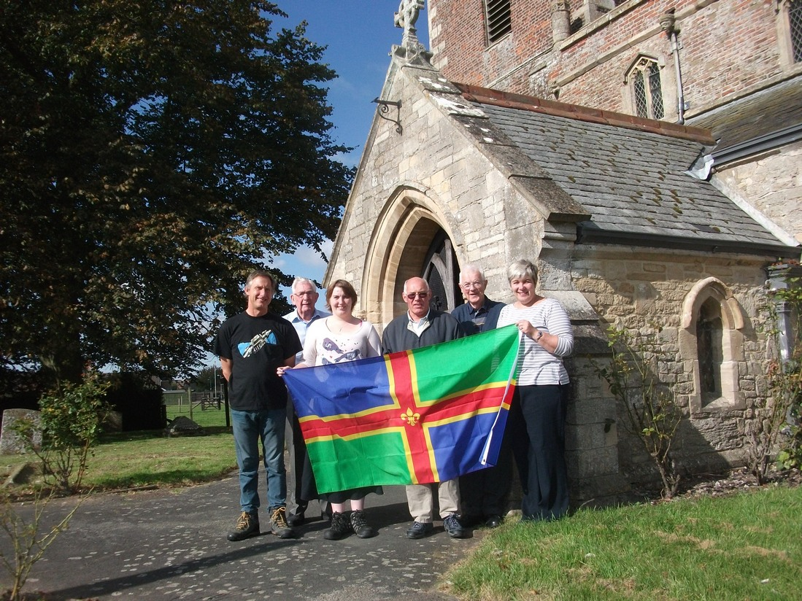

2015 Quarter Peals

Sun 29 Nov 15
Butterwick – St Andrew
1260 Plain Bob Minor in 42 mins
- Caroline Beach
- G John Collett
- Joanne French
- Thomas J Freeston
- Sam Napper
- Ian D G B Ansell (C)
Advent Sunday and to commemorate St. Andrew’s Day.
To celebrate that Ringer 2 and brother Michael first handled a bell at Burford 70 years ago.
To mark the arrival of Abigail Iris the great granddaughterof Ringer 2.
Fri 6 Nov 15
Wigtoft – SS Peter & Paul
1260 Plain Bob Minor in 42 mins (7-3-21 in A#)
- David Collin
- Mandy Dawson
- Anthony D Walker
- Valerie S Wild
- Greg Harrison
- Ian Dawson (C)
Rung as a birthday compliment to Natalie Harrison, wife of ringer of the 5th.
Sun 1 Nov 15
Willoughby – St Helens
1260 Grandsire Doubles in 43 mins (8-1-2 in A)
- Philip W Ford
- Helen M Brotherton
- Gemma L Evans
- Caitlin A Meyer
- Bill Brotherton (C)
- Ian B Evans
Rung on All Saints Day. Celebrating the wedding of Willoughby CofE school teacher Miss Roby/Mrs Jude (rung at the request of her pupil, Matthew Evans). Also celebrating the 20th birthday of Joe Waters, friend of all 6 ringers.
Sun 18 Oct 15
St Michael & All Angels - Coningsby
1260 Plain Bob Doubles in 43 mins (10-1-3 in G)
- Annie Hardwick
- Tess Rowland
- Sylvia M Taylor
- Alan D H Bird
- Greg Harrison (C)
- Bob Hardwick
First QP for treble.
Rung for Eastern Branch Quarter Peal Week.
Sun 18 Oct 15
SS Peter & Paul - Ingoldmells
1260 Plain Bob Doubles in 42 mins (8-0-05 in A#)
- Clare E Barker
- Isabel Barker
- Helen M Brotherton
- Bill Brotherton
- Tony W Barker (C)
- Jame A Barker
For the harvest festival service and LDGCB Eastern Branch Quarter Peal Week.
First QP for Clare (14) and James (11). Rung on the front six.
Sat 17 Oct 15 15
St Marys - Harrington
1260 Plain Bob Singles in 36 mins (2-3-17 in F#)
- Ian B Evans
- Gemma L Evans (C)
- Thomas J Evans
Rung for Eastern Branch Quarter Peal Week.
In memory of Trevor Walshaw friend of 2.
25th quarter peal for 1.
Sat 17 Oct 15
St Helen - Willoughby
1260 Stedman & Grandsire Doubles in 40 mins (8-1-2 in A)
- Gemma L Evans
- Caitlin A Meyer
- Helen M Brotherton
- Tony W Barker
- Bill Brotherton (C)
- Ian B Evans
Rung for Eastern Branch Quarter Peal Week.
Fri 16 Oct 15
St Andrews - Butterwick
1400 Plain Bob Doubles in 46 mins
- David Bennett
- Helen Brotherton
- Caroline Beach
- G John Collett
- Bill Brotherton (C)
- Louis Watson
First quarter peal inside 3.
Eastern Branch Quarter Peal Week.
Farewell compliment to Aubrey A Pepper. Tower Captain of Fishtoft for many years, moving to Devon.
Fri 16 Oct 15
SS Peter & Paul - Ingoldmells
1260 Plain Bob Triples in 45 mins (13-3-26 in F#) composed by W Shipway
- Yvonne I Smith
- Gemma L Evans
- Helen M Brotherton
- Valerie S Wild
- Michael J Smith(C)
- Bill Brotherton
- Peter A Limage
- Tony W Barker
For LDGCH Eastern Branch Quarter Peal Week.
Thu 15 Oct 15
SS Peter & Paul - Kirton-in-Holland
1260 Plain Bob Triples in 46 mins (18 in F)
- Tom J Freeston
- Valerie S Wild
- John Collett
- Joanne French
- Diane M Street
- Anthony D Walker
- Ian D G B Ansell (C)
David Reynolds
First touch of Plain Bob Triples 4. For Eastern Branch Quarter Peel Week.
Farewell compliment to Aubrey A Pepper, Tower Captain at Fishtoft for many years, moving to Devon.
Mon 12 Oct 15
St James - Freiston
1320 Grandsire and Plain Bob Doubles in 48 mins (14 1/2)
- Joanne French
- Thomas J Freeston
- Valerie S Wild
- Greg Harrison
- Ian D G B Ansell(C)
- Simon Pearson
Eastern Branch Quarter Peel Week
Also farewell compliment to Aubrey Pepper on his move to Tavistock..
Thu 1 Oct 15
St Andrews - Butterwick
1260 Plain Bob Doubles in 42 minutes (10 1/2)
- Caroline E Beach
- Thomas J Freeston
- David Bennett
- G John Collett (C)
- Joanne French
- Louis Watson
Rung to commemorate Lincolnshire Day.
Also thanks to Aubrey Pepper for his help over the years in training new ringers and wishing him every happiness in his new home.

Fri 11 Sep 15
St Swithin - Bicker
1260 Plain Bob Triples in 44 minutes (7-3-15 in Ab)
- Sylvia M Taylor
- Jean Kay
- Helen Brotherton
- Betty Stracey
- Michael Stracy
- Graham Colbourne
- Alan D H Bird (C)
- Bill Brotherton
Fri 11 Sep 15
St Mary - Swineshead
1260 Grandsire Triples in 44 minutes (16-2-10 in F)
- Jean Kay
- Helen Brotherton
- Sylvia M Taylor
- John Collett
- Michael Stracey
- Graham Colourne
- Bill Brotherton (C)
- Alan D H Bird
Wed 9 Sep 15
St Mary - Harrington
1260 Plain Bob Singles in 36 minutes (2-3-17 in F)
- Ian Evans
- Gemma Evans (C)
- Thomas J Evans
To celebrate HM Queen Elizabeth II becoming our longest serving monarch.
Wed 9 Sep 15
St Helena - Willoughby
1280 Plain Bob Doubles in 42 mins (8cwt – 1qr-2lb)
- Tracey Goldsmith
- Helen Brotherton
- Gemma L Evans
- Joseph E T Waters
- Bill Brotherton (C)
- Ian B Evans
To celebrate HM Queen Elizabeth II becoming our longest reigning monarch.
Congratulations to Helen and Bill Brotherton on 48 years of marriage.
Wed 9 Sep 15
St James Spilsby Lincolnshire
1320 Ipswich Surprise Minor 44 minutes
- Bryan Ward
- Sylvia M Taylor
- Helen Brotherton
- Greg Harrison
- Bill Brotherton
- Graham Colbourne (C)
First quarter in method 4.
Dedicated to Queen Elizabeth II becoming longest serving British monarch and in celebration of the 48th Wedding Anniversary of Helen and Bill Brotherton.
Mon 7 Sep 15
SS Peter and Paul - Ingoldmells
1250 Yorkshire Surprise Major in 45 mins (13-3-26)
- Dot Mason
- Bill Brotherton
- Michael Stracey
- Helen Brotherton
- Betty Stracey
- Sylvia M Taylor
- Alan D H Bird
Phil Mason (C)
Mon 7 Sep 15
St Nicholas - Addlethorpe
1296 Cambridge Surprise Minor in 44 mins (10-2-12 in F)
- Alan D H Bird (C)
- Helen Brotherton
- Michael Stracey
- Bill Brotherton
- Sylvia M Taylor
- Phil Mason
Saturday 13 June 2015
St Boltophs Boston Lincolnshire
1260 Plain Bob Minor 44 mins (21 cwt)
- Caroline E Beach
- Diana M Street
- Thomas J Freeston
- Sam Napper
- Alan D H Bird
- Michael J Smith (C)
Rung for 800 anniversary of the sealing of the Magna Carta.
Saturday 9 May 2015
St Andrews Butterwick Lincolnshire
1260 Grandsire Doubles 42 mins (9-3-12)
- Caroline E Beach
- Thomas J Freeston
- Sam Napper
- G John Collett (C)
- Simon Pearson
- J William Daubney
1st in method 1, 3, 5.
For the VE Day Commemoration
Monday 23 February 2015
SS Peter and Paul Ingoldmells Lincolnshire (13-3-26)
1260 Grandsire Triples
- Isabel Barker
- Helen M Brotherton
- Caitlin A Meyer
- Joanne French
- Valerie S Wild
- Joseph E T Waters
- Bill Brotherton (C)
- Tony W Barker
1st Grandsire Triples; 4 and 6.
In thanksgiving for the life of Nora Wall, loyal supporter of ringing here.
Also remembering Geoffrey Evison (28/10/53 to 01/02/15).
Saturday 21st February 2015
St Michael & All Angels, Coningsby (10-1-3)
1260 Plain Bob Doubles in 47 mins
- Bob Hardwick
- Tess Rowland
- Sylvia M Taylor
- David Collin
- Mark A Hibbard (C)
- Alan DH Bird
In memory of Bill Chapman, a local villager and good friend to the bell ringers, Bill would often make and donate replacement Stays
Also in memory of Geoffrey Evison, LDGCBR Eastern Branch member.
Friday 20th February 2015
St Wilfred's, Alford (12-1-24)
1260 Plain Bob Doubles in 43 mins
- Tracey K Goldsmith
- Caitlin A Meyer (C)
- Joseph E T Walters
- Richard D Willoughby
- Edward Vear
- Phillip W Ford
Rung for the 70th birthday of Jan Clark, ringer at this tower, and birthday compliment to Bob Clark, parents of 1.
1st quarter peal 1.
1st away from treble 6.
Saturday 17 January 2015
SS Peter and Paul Ingoldmells Lincolnshire (13-3-26)
1344 Plain Bob Major
- Lorna Adlington
- Isabel Barker
- C Victor Waite
- Michael J Belcher (C)
- Bill Brotherton
- K John Turner
- Michael J Smith
- Tony W Barker
In thanksgiving for the life of Nora Wall, loyal supporter of ringing here and at Burgh-le-Marsh, Friskney and Addlethorpe.